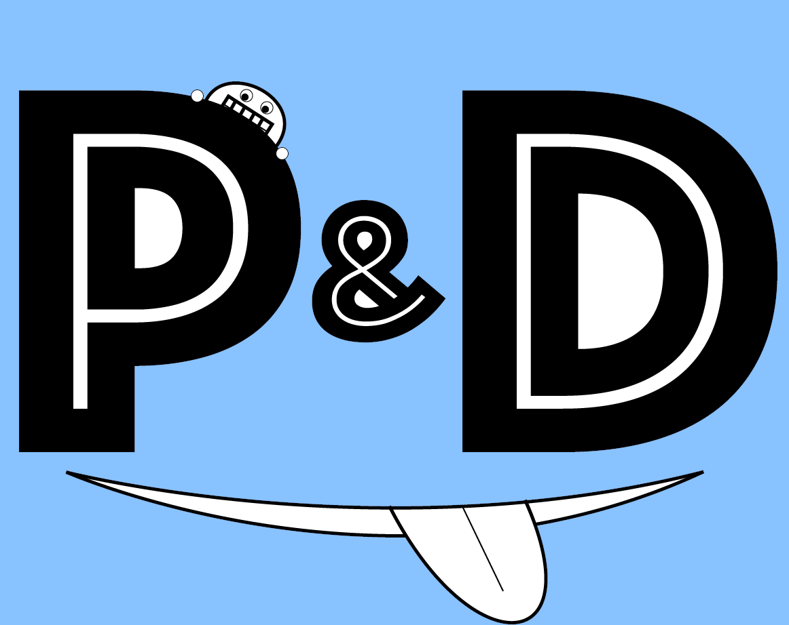

ホーム
モーメント
通知
メッセージ
ツイート

ブライアン
@brian_p&d
ツイート
5,000
フォロー
325
フォロワー
349
トレンド
#ぴーあんどでー
2,340件のツイート
P&D
5,546件のツイート
#すていあーz
5,100件のツイート
stairs
3,9930件のツイート
#まえまえ
9,120件のツイート
#前々
1,632件のツイート
#だれそれ
5,3512件のツイート
#さんざん万
5,04件のツイート
おすすめユーザー
brian
@brian_p&d
+ フォローする
brian
@brian_p&d
+ フォローする
brian
@brian_p&d
+ フォローする